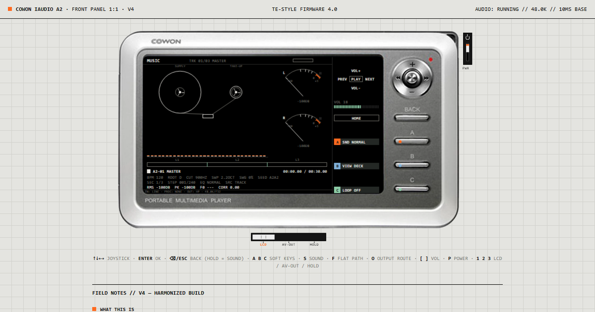

A PORTABLE
MUSIC FACTORY.
A re-imagined COWON iAUDIO A2. What started as an overhaul of one ageing player turned into a pocket production instrument: tape, loops and a signal chain for guitar and vocals. This repo is where the canvases are previewed, the ports will ship, and the build gets documented in public.

01 WHAT THIS IS
HARDWARE
The original target: a real COWON iAUDIO A2 taken apart and rebuilt with new firmware. The device's own panel — screen window, joystick, soft keys — is reproduced 1:1 in the canvas so the layout is honest before any port exists.
CANVAS
Every version is one self-contained HTML file: no build step, no dependencies, no network calls. The canvas is where the app is designed and stress-tested in a browser before it becomes something you can install.
INSTRUMENT
Audio is synthesised live with the Web Audio API, and the on-screen meters read from real analyser nodes. The end goal is a production instrument with guitar and vocal processing — not a media player skin.
02 LIVE CANVASES
| VERSION | STATE | WHAT CHANGED | OPEN |
|---|---|---|---|
| V4 | LATEST | Current canvas: the 24-mode structure carried forward, with ongoing work on input handling and the music screen. The in-page changelog still describes what v3 added. | ▶ OPEN V4 |
| V3 | STABLE | 24 modes, OP-1 style tape reels, signal-flow sound chain, rebuilt icons, RANK feasibility percentages for the A2 and a PC build. | ▶ OPEN V3 |
| V2 | ARCHIVE | 17 modes. Looper, recorder, sound chain, routing and a status line. | ▶ OPEN V2 |
| V1 | ARCHIVE | The original canvas: real photo chassis, 8 modes. Kept as the reference and the rollback. | ▶ OPEN V1 |
Older canvases are never edited or overwritten — they are frozen snapshots. A broken old build stays broken on purpose, so it remains a truthful record.
03 PORTS & DOWNLOADS
| TARGET | STATUS | NOTES | WHERE |
|---|---|---|---|
| WEB CANVAS | AVAILABLE | Every version runs straight from this site. Nothing to install. | ▶ DEMOS |
| ANDROID · APK | PLANNED | First real port. Signed APKs will be attached to a tagged Release — never committed to git. | RELEASES |
| iOS | RESEARCH | Distribution needs an Apple Developer account and TestFlight; sideloading an IPA is not a normal route. Feasibility before promises. | — |
| DESKTOP | PLANNED | Windows first, then macOS and Linux. Desktop is where guitar/vocal input and low-latency audio actually get serious. | — |
| A2 HARDWARE | RESEARCH | The original dream: installable firmware on a physical iAUDIO A2. Still the north star, and still the least proven path. | — |
04 COMPANION TOOLS
| TOOL | STATUS | WHAT IT DOES | GET IT |
|---|---|---|---|
| A2 VIDEO FORGE | WINDOWS | Folder-watching transcoder for the real A2: drop a video in, get a 480×272 XviD + MP3 AVI the player can actually handle. Python + FFmpeg, no installers, no telemetry. | ▶ ZIP SOURCE |
The canvases imagine the A2's future. This keeps the hardware useful today — and it is the only thing here written for a device you already own. The ready-to-run ZIP is in Releases (v1.0.0); Python users can run it straight from source.
05 PROJECT STATUS
M0Design canvas in the browser — demos, audio engine, full UI language.
ONGOINGM1Port the canvas into a real app shell; share one UI/audio core across platforms.
NEXTM2Android APK, signed and released, installable on a normal phone.
PLANNEDM3Guitar and vocal input with FX — the reason this became an instrument.
PLANNEDM4iOS via TestFlight, then desktop builds. Distant, and honest about it.
RESEARCHThe full plan, including what is deliberately not being built yet, lives in docs/ROADMAP.md.
06 REPO MAP
index.html # this page — the GitHub Pages root
v1/ … v4/ # frozen canvases, one per version, never edited
versions/ # gallery that links every canvas
assets/ # chassis cut-out + preview images
docs/ # ROADMAP.md, PACKAGING.md, V5-BRIEF.md
tools/ # chassis cut-out script, a2-video-forge/
CONTRIBUTING.md # the rules for adding a versionBinaries never live in this repo. APKs, installers and archives go in Releases, tagged to a version; the repo holds source and pages.